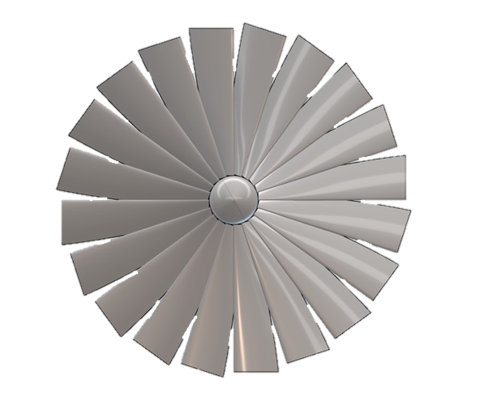
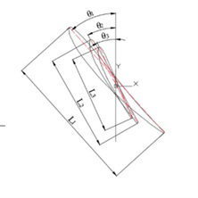
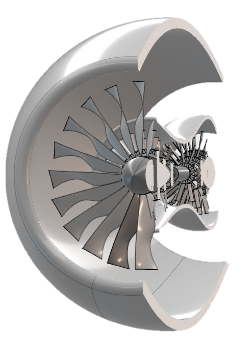
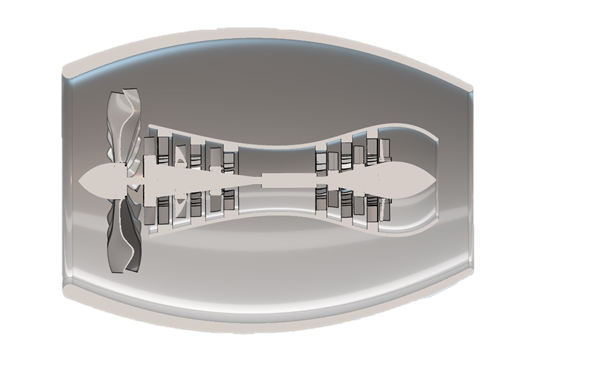
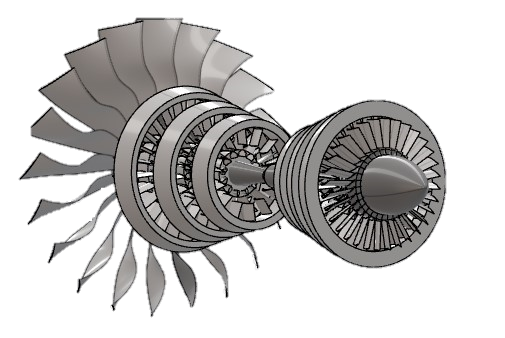

The Turbofan engine model ER01.
This consisted of a Catia Assembly of the engine. Including:
- Nacelle
- Fan
- 3 Compressor stages
- 3 Turbine stages
- Large Bypass
Following this used published research papers to iterate on the dimensions of my design.
The first iteration is shown left.
The aerofoil used is one manufactured from splines.
The research paper Design and Perfomance Analysis of Blades
Based on the Equal-Variable Circulation Method
was very helpful on determing the aerodynamic shape of the fan blade.


A NASA/LANGLEY LS Airfoil was used in the iterated version. With forward sweep ranges of 40-70%. Using 3 blade profiles in the form:

- L1: 236.12mm
- L2: 135.50mm
- L3: 122.53mm
- θ1: 45°
- θ2: 26°
- θ3: 12°


FINAL MODEL (Seen above).
A cut section view shows the iternals of the compressor and turbine stages respectively.
Conclusion:
I worked and iterated on this design for over 80 hours. My catia skills have improved dramatically from it.
If you would like the view file for the catia assembly please email me.
Resources used:
- “Advancements in Coupled Aeropropulsive Design Optimization for High-Bypass Turbofan Engines”
- “Design of circular air intakes for subsonic turbofans”.
- “UNDERSTANDING FAN BLADE TIP AERODYNAMICS”
- “Design and Performance Analysis of Blades Baded on the Equal-Variable Circulation Method”
